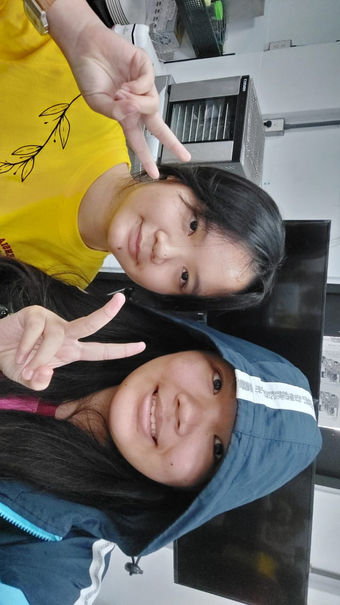

前几天，我去了台湾花莲Stella Maris Ursuline学校. 在这个学校我交了一个新朋友. 我的新朋友叫Dawa. 她今年十八岁了，她二OO七年五月十八日出生.
Dawa有一个方方的脸，大大的眼睛，大大的鼻子，厚厚的嘴唇，皮肤很白，还有长长的头发. 她长得很漂亮. 她在台湾花莲的Stella Maris Ursuline学校上学. 她今年是十二年级的学生. Dawa可以吃任何食物，她的爱好是画画和唱歌. 她很有趣，我很喜欢和她聊天.
花莲是很漂亮. 我在那里看到了很多猫. 我很喜欢参观Stella Maris学校，因为在那里我认识了很多新朋友，还尝试了很多新事情. 我们一起包了饺子，做了科学实验，还看了表演. 在学校里，我学会了怎么做饭，还学了一些新的中文词语。这次旅行真的很开心，我要再看她和花莲的！
